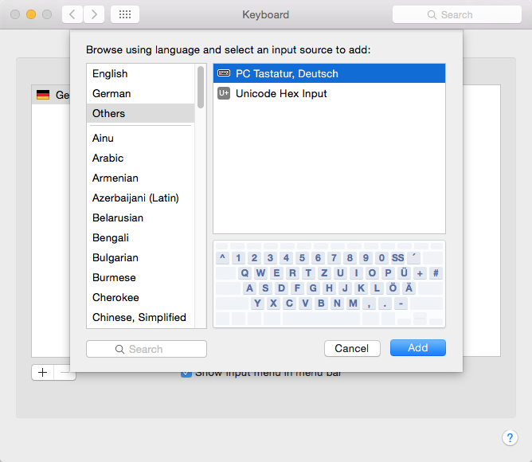
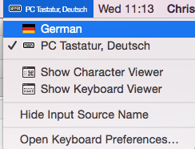
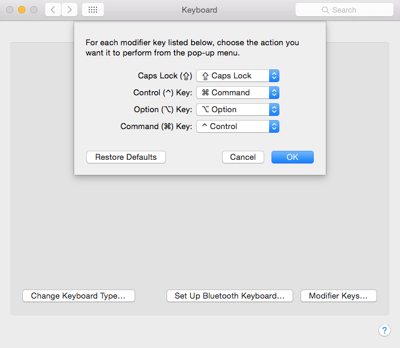

Mac Umstieg von Windows
Mac Tastaturen sind schön anzusehen. Doch für den Power User sind sie leider nicht gemacht. Glücklicherweise kann man sich die alte PC Tastatur anschließen.
Das Tastatur Layout auf dem Mac ist ein einziges Ärgernis, wenn man jahrelang unter Windows gearbeitet hat. Wer schon einmal eine E-Mail getippt hat und dann beim Eingeben der Empfänger Adresse erstaunt feststellt, dass sich plötzlich das E-Mail Programm schließt weiß wovon ich spreche. Es ist etwas umständlich das Layout auf das Windows (bzw. Linux) Format umzustellen, aber ich finde der Aufwand lohnt sich.
Im ersten Schritt lädt man eine Layout Datei herunter und kopiert sie nach /Library/Keyboard
Layouts!
Download Layout Datei
Unter den Systemeinstellungen kann man die Tastatureinstellungen konfigurieren. Dort klickt man auf das + zum Hinzufügen eines neuen Layouts und wählt jetzt die neu hinzugekommene Option PC Tastatur unter der Kategorie Others (siehe Screenshot).


Die Kürzel für die Zwischenlage werden über die Command bzw. Apfel Taste gesteuert. Apfel+C ist Kopieren und nicht Strg+C wie man es gewohnt ist. Dieses Verhalten lässt sich aber sehr leicht ändern.
In den Keyboard Einstellungen der Systemsteuerung wählt man den Button Modifier Keys.
Dann vertauscht man einfach die Control und Command Taste.

Das PC Tastatur Layout ist leider noch nicht die finale Lösung. Denn viele Tasten haben ein anderes Verhalten unter MacOSX. Die Pos1 Taste setzt z.B. den Cursor nicht an den Anfang einer Zeile, sondern an den Anfang des Dokuments.
Man kann das ungewohnte Verhalten einzelner Tasten überschreiben. Man muss sich hierzu eine KeyBindings Datei erzeugen und unter dem Pfad /Library/KeyBindings einfügen. Es gibt diverse Editoren im Netz mit denen man diese Datei erzeugen kann.
Download DefaultKeyBinding.dictMit den oben genannten Einstellungen sollte man ein nahezu vollständiges Windows PC Verhalten herstellen. Es gibt aber diverse Programme, die ihrerseits widerum eigene das Tastatur Verhalten von Mac OSX überschreiben. Hierzu hilft es die Konfiguration des Programms zu untersuchen (siehe Beispiel unten).
Im Terminal kann die Pos1 und Ende Taste über die Eisntellungen korrigieren (siehe Screenshots).